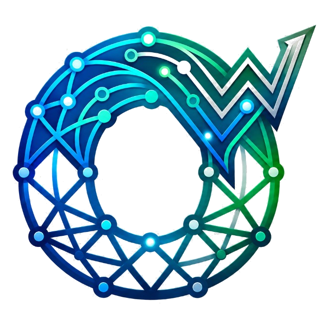

Text is not structure
A paragraph can hide entities, relations, exceptions, and definitions. Flat extraction misses the system underneath the sentences.

OntoWeaverCrafting Domain-Native Intelligence
Every domain’s core is its ontology. We curate it to turn structured and unstructured data into a deterministic, fact-grounded knowledge base that powers systems, agents, and experts.
Enterprises run on PDFs, contracts, manuals, filings, and research notes. Humans can read them. Machines cannot reason over them — until the text is parsed, typed, and linked.
A paragraph can hide entities, relations, exceptions, and definitions. Flat extraction misses the system underneath the sentences.
Without shared types and meanings, every document stays an island. Ontology turns scattered mentions into a coherent vocabulary.
Once entities and relations are linked, you can query, traverse, and compose — not just search for similar wording.
Experts should define the schema and validate edge cases — not re-key every clause by hand.
Our current focus is the full chain: parse the source, curate the ontology, materialize the knowledge graph.
Ingest PDFs, scans, and structured files. Recover layout, tables, sections, and citations. Emit clean, span-addressable text with provenance back to the source page.
Define the types that matter for the domain — entities, relations, attributes, constraints. Align extracted mentions to a living schema experts can inspect and revise.
Weave a graph: nodes for concepts, edges for relations, attributes for facts. Queryable structure with lineage to the paragraphs that justified each claim.
The knowledge already exists. It lives in manuals, contracts, policies, standards, and expert notes. OntoWeaver turns that material into parseable text, curated ontology, and operable graphs.